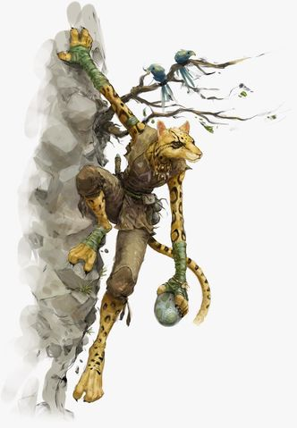

Tabaxis
Y'avait c'te Tabaxi, là, qu'avait passé un peu d'temps d'par chez nous y'a quequ'z hivers. Tous les soirs, elle enjayait bien la salle avec ses histoire, là, pi elle passait l'gros d'ses journées à faire la sieste dans une chaise là, d'vant la cheminée, là. J'pensais qu'elle était paresseuse, mais quand la Linene est venue r'chercher une broche qu'elle a cru perdue, l'Femme-chat était dehors avant que j'puisse cligner de l'œil. Bougresse !
- Toblen Pierrecolline, aubergiste
Hommes-chats venant d'un pays étrange et lointain, les tabaxis sont curieux et affectionnent particulièrement les artefacts et les histoires. Grands voyageurs, les tabaxis restent rarement au même endroit longtemps et aiment à parcourir le monde pour en découvrir toutes les merveilles.
Physiologie
De grande taille (1,80 m à 2,10 m), le tabaxi usuel a une carrure humanoïde svelte et gracieuse pourvue du pelage, des griffes, de la tête et de la queue d'un félin, léopard ou jaguar, selon son origine. Imaginez simplement que l'un de ces grands félidés se dresse sur ses pattes arrière et vous adresse la parole ! Leurs yeux aux pupilles fendues scintillent dans le noir et leur offrent une acuité visuelle supérieure à celle d'un humain, de jour comme de nuit.
Origine
Appelés hommes-chats, hommes-léopards ou encore jaguariens, les tabaxis constituèrent longtemps une race cachée à l'organisation clanique dont les villages, reclus, sont dirigés par les anciens et guidés par des chamanes. Refusant pour la plupart le contact avec les autres races intelligentes, certains tabaxis ont aujourd'hui quitté leur isolement, tant par curiosité que par intérêt, abandonnant leur jungle native de Maztica et explorant le monde, individuellement ou en groupes.
Habitat
Installés souvent dans une jungle ou à ses abords, les clans tabaxis vivent généralement de la chasse ou de la pêche, leur régime étant essentiellement carnivore. Composé d'autant de mâles que de femelles, le clan prend soin de ses anciens et éduque ses jeunes. Cette solidarité s'arrête toutefois strictement au clan : le voyageur égaré sera au mieux éconduit fermement, au pire attaqué dans une embuscade meurtrière. Refusant tout contact avec le monde extérieur comme avec les autres clans, les tabaxis sédentaires sont parmi les plus isolationnistes des races. Seule exception au refus des étrangers : un clan tabaxi approché par un seigneur tabaxi lui fera allégeance sans sourciller, sachant que s'opposer à la volonté de ce puissant prédateur marquerait leur fin à tous, sans exception.
Société
Certains tabaxis choisissent de répondre à l'appel du monde extérieur sans toutefois courir les risques d'un aventurier. Voyageant en groupe dans des carrioles bariolées, ils se font baladins, marchands et bricoleurs de tout poil, se produisant en spectacle et vivant du commerce de ville en village. Menés par un aîné, souvent un ancien aventurier, ils sont tolérés dans la plupart des communautés civilisées, mais seront systématiquement suspectés, leur nature chapardeuse étant connue voire exagérée dans l'imaginaire collectif. Préférant le troc aux pièces d'or, ils se montreront honnêtes dans leurs transactions, voire même d'excellent clients si on parvient à exciter leur curiosité avec des produits exotiques.
Seigneurs tabaxis
Ces seigneurs tabaxis sont des individus extrêmement rares dont l'ascendance divine ou maudite laisse peu de doutes. Ressemblant bien plus à des bêtes qu'à des humanoïdes, les Seigneurs tabaxi sont des créatures particulièrement intelligentes et cruelles dont le cousinage avec les autres tabaxis est évident. Ce sont de redoutables magiciens, des clercs de Zaltec ou pire encore : les deux à la fois. Exclusivement mâles, ces Seigneurs sont généralement mauvais, solitaires et de redoutables adversaires. On en trouve parfois à la tête de clans tabaxis, qu'ils asservissent pour un temps, que ce soit pour profiter de la force d'un groupe, combattre un autre Seigneur ou se reproduire avec une femelle tabaxi, dont la progéniture sera systématiquement un Seigneur. Quand il n'a plus besoin du clan, le Seigneur s'en va immédiatement et souvent définitivement, emportant avec lui son éventuel fils.
Avides de tout
Il se dit que certains tabaxis naissent touchés par le Seigneur Chat, une déité obscure qui régirait le destin de cette race. Ces élus seraient pourvus d'un ou plusieurs traits félins encore plus marqués, ainsi que d'une curiosité insatiable, les poussant à quitter leurs terres natales pour se dédier à une vie d'aventures. Après celle-ci, ceux qui survivent retournent finir leurs jours au sein de leur clan, ramenant des nouvelles du monde extérieur et des histoires inspirant la génération d'aventuriers suivante.
Ces explorateurs sont souvent des individus avides de découvertes, que ce soit de richesses en espèces, de connaissances, ou simplement de rencontres et d'aventures. Quelle que soit la nature des trésors, les tabaxis semblent en effet inexplicablement attirés par ceux-ci. L'un des membres de cette race sera prêt à faire des efforts considérables et à mettre sa vie en péril pour mettre la main sur un joyau qui lui aura plu, qu'il abandonnera ensuite négligemment pour un grimoire rempli de formules oubliées, qu'il sera prêt à échanger le lendemain contre les derniers potins de la ville où il est de passage ! Les tabaxis sont en effet friands de richesses et de savoir, mais sont surtout des acheteurs (et souvent des voleurs) compulsifs, dont l'attention et l'attirance sont motivées avant tout par l'inconnu.
Un tabaxi partant à l'aventure embrassera logiquement une carrière de roublard ou de barde selon que ses motivations sont d'ordre matériel ou intellectuel. Les clercs du Seigneur Chat, la divinité tutélaire des tabaxis, rattachés au domaine de la duperie, restent plutôt rares, mais il est envisageable de croiser des tabaxis clercs d'un dieu du savoir. Le caractère indépendant et curieux des tabaxis les pousse vers le chaos mais rarement vers le mal.
Note : le tabaxi est présenté en tant que race pour PJ dans le Volo's Guide to Monsters de D&D 5.
Par pougli